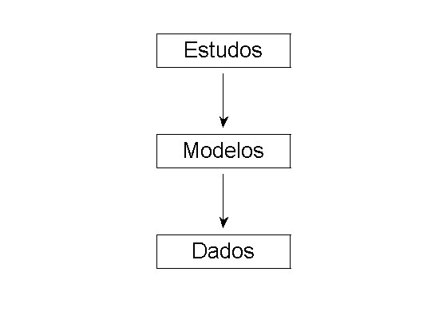

Dinâmica Veicular
Esta é a documentação do repositório Dinamica-Veicular. Para download dos arquivos acessar:
Contents
Organização
Este repositório é organizado em três camadas (ESTUDOS, MODELOS e DADOS) com mostrado na figura abaixo.

A seguir cada camada é apresentada com os scripts disponíveis e os links para maiores informações.
Estudos
Os estudos são os scripts que usam os modelos e seus respectivos dados para buscar alguma informação à respeito do comportamento dinâmico dos veículos. Estudos necessitam de modelos e dados. Lista dos estudos:
Modelos
Os modelos são usados pelos sripts de estudos e necessitam de dados.
Modelo de veículo
Os modelos de veículo são as equações diferenciais que descrevem a dinâmica do veículo. Os modelos disponíveis são:
Para maiores detalhes ver: Modelo de veículo.
Modelos de pneu
Os modelos de pneu descrevem a curva característica do pneu. Os modelos disponíveis são:
Para maiores detalhes ver: Modelo de pneu.
Dados
Os dados são usados pelos scripts de modelos que por sua vez são usados pelos scripts de estudos.
Dados de veículo
Lista de dados para modelos de veículo:
Dados do pneu
Lista dos dados para modelos de pneu:
Documentação
Para gerar toda a documentação: docDin.m
Encoding
Todos os arquivos deste repositório utilizam o encoding: windows-1252 (via Sublime3). Logo, o encoding do Matlab deve ser o mesmo. Para isto, utilize o seguinte código na linha de comando:
% Verifica o encoding: slCharacterEncoding() % Modifica o encoding para 'windows-1252' slCharacterEncoding('Windows-1252')
Para rodar os códigos em sistemas operacionais Windows (Testado em Windows(7)/Matlab 2014a): sem problemas pois encoding windows-1252 é o padrão (Verificar com os comandos acima). Porém o texto no editor ou em figuras pode apresentar erros quando executados em sistemas operacionais Linux.
Para rodar em Linux (Testado em Ubuntu14.04)/Matlab 2013a): com problemas pois UTF-8 é o padrão (Verificar). Logo:
- Usar na linha de comando: 'slCharacterEncoding('Windows-1252')'
- Mesmo assim editor não funciona: não exibe os caracteres corretamente (Usar Sublime-Text por exemplo)
- Os gráficos ficam direito.